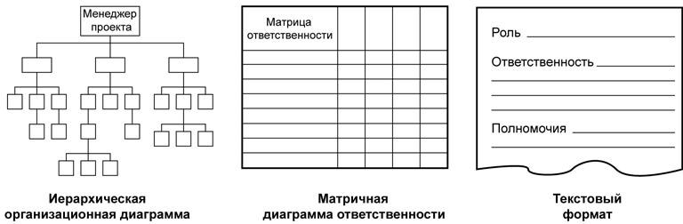
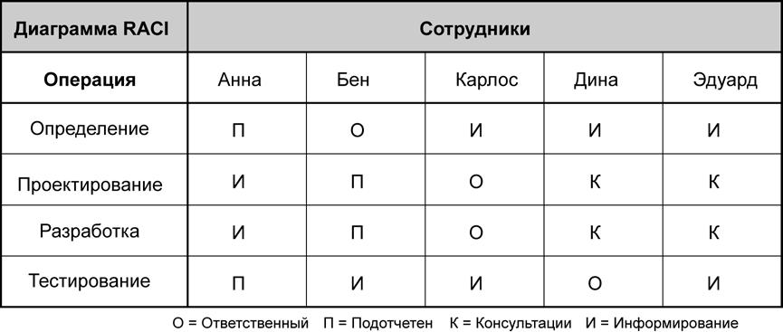
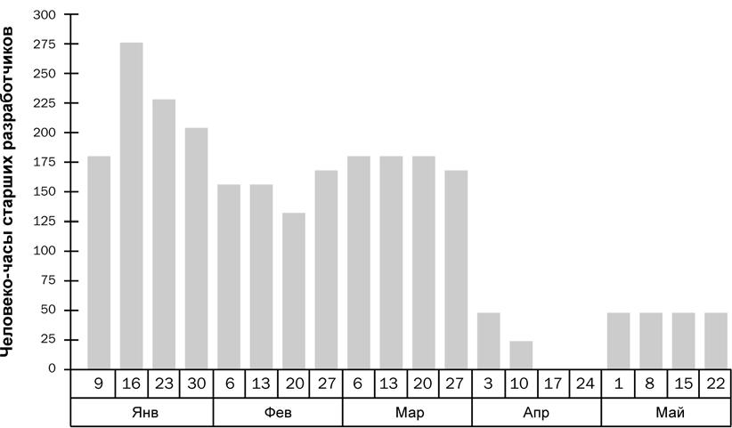

Планирование человеческих ресурсов (п.9.1, рис.12.1)
При планировании человеческих ресурсов определяются роли, ответственность и подотчетность в проекте, а также создается план управления обеспечением проекта персоналом. Роли в проекте могут быть определены как для отдельных людей, так и для групп. Эти люди или группы могут быть набраны как в самой исполняющей организации проекта, так и на стороне. План управления обеспечением проекта персоналом может включать в себя определения сроков и способов набора членов команды проекта, критерии их освобождения от участия в проекте, рекомендации по проведению дополнительного обучения, схема поощрения и награждения, соответствие установленным нормам, проблемы безопасности, а также определение влияния плана управления обеспечением проекта персоналом на деятельность организации.
9.1.1 Планирование человеческих ресурсов: входы
9.1.1.1 Факторы внешней среды предприятия. Определение ролей и ответственности в проекте должны производиться с учетом того, как будет осуществляться привлечение к проекту существующих организаций, а также каким образом в настоящее время осуществляться взаимодействие между различными людьми по различным техническим аспектами. К факторам внешней среды предприятия, затрагивающим корпоративную культуру и структуру предприятия, относятся:
- Организационные. Какие организации или отделы привлекаются к участию в проекте? Каковы механизмы взаимодействия, существующие на данный момент между ними? Каковы сложившиеся на данный момент формальные и неформальные отношения между ними?
- Технические. Какие различные навыки и специальности необходимы для выполнения данного проекта? Существует ли необходимость в обеспечении координации между языками программного обеспечения, инженерными подходами или различными типами оборудования? Существуют ли какие-либо специфические сложности при переходе от одной фазы жизненного цикла к другой?
- Межличностные. Какие официальные и неофициальные отношения подотчетности существуют на данный момент между кандидатами в члены команды проекта? Каковы должностные обязанности кандидатов? Каковы существующие между ними отношения типа начальник-подчиненный?Каковы существующие между ними отношения типа поставщик-заказчик? Какие культурные или языковые отличия между членами команды могут оказать влияние на рабочие взаимоотношения? Каков существующий на данный момент уровень доверия и уважения между ними?
- Логистика. Какое расстояние отделяет людей от модулей, которые будут частями проекта? Находятся ли эти люди в различных зданиях, часовых поясах или странах?
- Политические. Каковы цели и интересы каждого из потенциальных участников проекта? Какие люди или группы людей имеют неформальное влияние в областях, представляющих важность для проекта? Какие существуют неформальные связи между потенциальными участниками проекта? Помимо вышеперечисленных факторов, на выбор членов команды проекта влияют ограничения. В качестве примеров ограничений, способных повлиять на гибкость процесса планировании человеческих ресурсов, можно привести следующее:
- Организационная структура. В организации со слабой матричной базовой структурой роль менеджера проекта будет относительно слабой.
- Коллективные договоры. Наличие договоров с профсоюзами или другими объединениями работников может потребовать создания определенных ролей или отношений подотчетности.
- Экономические условия. В качестве примеров экономических условий, ограничивающих возможности по подбору персонала, можно привести ограничения по набору, сокращение бюджета по обучению персонала или недостаток средств на командировочные расходы.
9.1.1.2 Активы организационного процесса. По мере формирования методологии управления проектом внутри организации накопленные знания из опыта планирования человеческих ресурсов в прошлом становятся доступными в качестве активов организационного процесса (п. 4.1.1.4), что помогает в планировании текущего проекта. При помощи шаблонов и контрольных списков можно сократить количество времени, затрачиваемое на планирование на ранних стадиях проекта, и снизить вероятность упущений некоторых важных обязанностей.
- Шаблоны. В качестве примеров шаблонов, которые могут оказаться полезными при планировании человеческих ресурсов, можно привести организационные диаграммы проекта, описания позиций, оценку эффективности проекта и стандартный подход к разрешению конфликтов.
- Контрольные списки. В качестве примеров контрольных списков, которые могут оказаться полезными при планировании человеческих ресурсов, можно привести обычные схемы распределения ролей и ответственности, типовые квалификации для определенной должности, прохождение определенных курсов обучения, принципы работы в команде, меры безопасности, соблюдение правовых норм и система поощрения.
9.1.1.3 План управления проектом (п.4.3) включает в себя требования к ресурсам операции и описания операций по управлению проектом (например, обеспечение качества, управление рисками и поставки), которые помогут команде управления проектом определить все необходимые роли и ответственность.
- Требования к ресурсам операции. При планировании человеческих ресурсов для определения человеческих ресурсов проекта используются требования к ресурсам операции (п. 6.3.3.1). Постепенно в рамках процесса планирования человеческих ресурсов происходит обновление предварительных требований в отношении требуемых людей и их квалификации.
9.1.2 Планирование человеческих ресурсов: инструменты и методы
9.1.2.1 Организационные диаграммы и назначения по проекту. Существует различные форматы документирования распределения ролей и ответственности членов команды проекта. Большинство форматов относятся к одному из трех типов (рис. 12.3):
- иерархический,
- матричный,
- текстовый форматы.
Кроме того, некоторые назначения по проекту указываются во вспомогательных планах по проекту (например, в планах управления рисками, качеством или коммуникациями). Независимо от того, какая комбинация методов используется, цель всегда одна - добиться того, чтобы для каждого пакета работ был назначен один ответственный за его исполнение и чтобы каждый член команды четко понимал свою роль и ответственность.

Рисунок 12.3 - Форматы определения ролей и ответственности
- Иерархические диаграммы. Для отображения позиций и взаимоотношений в графическом формате сверху вниз можно использовать структуру обычной организационной диаграммы. Одним из таких способов обобщенного представления областей ответственности являются иерархические структуры работ (ИСР), основное назначение которых заключается в разбиении результатов поставки проекта на пакеты работ. Организационная структура (ОС) внешне похожа на ИСР, но организована она не по результатам поставки проекта, а в соответствии с имеющейся структурой подразделений организации (отделов, групп или команд). Под каждым отделом указан список операций проекта или пакета работ. Таким образом, можно увидеть всю ответственность в проекте для данного функционального отдела (например, отдела информационных технологий или отдела закупок) в одном месте рядом с названием отдела.
Иерархическая структура ресурсов (ИСР) - это другая разновидность иерархической диаграммы. Она используется для разбиения проекта по типам ресурсов. Например, ИСР может отобразить всех сварщиков и сварочное оборудование, используемое при строительстве судна, несмотря на то что они разбросаны по различным ответвлениям ОС или ИСР. ИСР может быть полезна при контроле стоимости проекта и может быть организована согласно бухгалтерской системе, действующей в организации. ИСР может содержать и иные категории ресурсов, чем человеческие ресурсы.
- Матричные диаграммы. Матрица ответственности (МО) используется для отображения связей между выполняемыми работами и членами команды проекта. В крупных проектах матрицы ответственности могут быть использованы на разных уровнях. Например, матрица ответственности высокого уровня может определять, какая группа или подразделение команды проекта отвечает за какой компонент в ИСР, в то время как матрицы ответственности более низких уровней используется внутри группы для распределения ролей, ответственности и уровней полномочий в конкретных операциях. Матричный формат, иногда также называемый табличным форматом, позволяет увидеть все операции, назначенные к выполнению определенному человеку, или отобразить всех людей, принимающих участие в выполнении определенной операции.
На рис. 12.4 изображена матрица ответственности, называемая диаграммой RACI. Такое название она носит потому, что аббревиатура RACI составлена из первых букв названий документально зафиксированных ролей: Ответственный, Подотчетный, Проконсультироваться и Информировать (Responsible, Accountable, Consult, and Inform). На примере диаграммы в левой колонке указана выполняемая работа на уровне операций, но при помощи матрицы ответственности можно отобразить на разных уровнях. Имена могут обозначать как конкретных исполнителей, так и группы.

Рисунок 12.4 - Матрица ответственности (МО) в формате RACI
- Текстовые форматы. Для описания распределения ответственности, при котором нужны подробные описания, используются текстовые форматы. Обычно в таких документах в краткой форме содержится следующая информация: обязанности, полномочия и квалификация. Такие документы называют по-разному, например "описание позиции" или "форма роль- обязанности-полномочия". Из таких описаний и форм получаются прекрасные шаблоны для будущих проектов, особенно если в процессе исполнения проекта обновление информации происходит за счет накопленных знаний.
- Другие разделы плана управления проектом. Перечень и описание некоторых обязанностей, относящихся к управлению проектом, находится в других разделах плана управления проектом. Например, в реестре рисков перечислены лица, ответственные за риски, в плане управления коммуникациями содержится список членов команды, ответственных за операции по коммуникациям, а в плане управления качеством перечислены лица, ответственные за выполнение операций по обеспечению качества и контроля качества.
9.1.2.2 Налаживание связей. Неформальное взаимодействие с коллегами внутри организации или в рамках данной отрасли - это эффективный способ понять, какие политические и межличностные факторы и как будут влиять на эффективность различных вариантов обеспечения проектов персоналом. Операции по налаживанию связей включают в себя предварительную переписку, встречи за обедом, неформальные беседы и собрания по специальности. Сосредоточение внимания на методе налаживания связей в начале проекта может быть полезно, но также очень эффективно систематическое поддерживание таких связей до начала проекта.
9.1.2.3 Теория организации дает информацию о поведении людей, команд и подразделений. Применение проверенных принципов позволяет сократить время, необходимое для создания выходов планирования человеческих ресурсов и повышает вероятность того, что планирование окажется реалистичным.
9.1.3 Планирование человеческих ресурсов: выходы
9.1.3.1 Распределение ролей и ответственности учитывает:
- Роль. Обозначение части проекта, за выполнение которой несет ответственность определенное лицо. В качестве примеров ролей в проекте можно назвать инженера-строителя, чиновника службы подготовки судебных заседаний, бизнес-аналитика, координатора проведения испытаний. Для успешного выполнения проекта крайне важно, чтобы для каждой роли были ясно определены полномочия, ответственность и границы.
- Полномочия. Право задействовать ресурсы проекта, принимать решения и утверждать одобрение действий или результатов. Примерами решений, для принятия которых нужны ясные и четкие полномочия, являются выбор способа завершения операции, приемка качества и порядок реагирования на отклонения в проекте. Члены команды работают наиболее эффективно, когда уровень полномочий каждого из них соответствует их ответственности.
- Ответственность. Работа, которую член команды проекта должен выполнить для завершения операций проекта.
- Квалификация. Навыки и способности, необходимые для выполнения операций проекта. Если члены команды проекта не обладают необходимой квалификацией, то выполнение проекта может оказаться под угрозой. При обнаружении подобных несоответствий необходимо предпринять предупредительные меры, например провести обучение, инициировать изменение расписание или содержания.
9.1.3.2 Организационная диаграмма проекта - это графическое представление состава команды проекта и отношения подотчетности между ее членами. В зависимости от потребностей проекта она может быть официальной или неофициальной, подробной или обобщенной. Например, организационная диаграмма проекта для команды спасателей, состоящей из 3 000 человек, будет значительно более подробной, нежели для внутреннего проекта с командой в 20 человек.
9.1.3.3 План управления обеспечением проекта персоналом является составной частью плана управления проектом (п. 4.3) и содержит описание, когда и как должны выполняться требования по обеспечению человеческими ресурсами. В зависимости от потребностей проекта план управления обеспечением проекта персоналом может быть официальным или неофициальным, подробными или обобщенным. Для отражения текущих действий по пополнению и развитию команды проекта этот план в ходе проекта постоянно обновляется.
Информация, содержащаяся в плане управления обеспечением проекта персоналом различается в зависимости от области приложения и размеров проекта, но в любом случае должны быть отражены следующие моменты:
- Набор персонала. При планировании набора членов команды проекта возникает ряд вопросов. Например, будут ли для этого задействованы имеющиеся человеческие ресурсы организации или они будут набираться извне на контрактной основе? Будут ли члены команды работать в одном месте или они могут работать удаленно? Какова стоимость, соответствующая каждому уровню знаний (квалификации), необходимому для проекта? Насколько отдел кадров организации может помочь команде управления проектом?
- Расписание. В плане управления обеспечением проекта персоналом указываются временные рамки задействования членов команды проекта, индивидуально или по группам, а также указывается время начала операций по набору персонала (например, найма). Один из инструментов для графического отображения человеческих ресурсов - это гистограмма ресурсов (п. 6.5.3.2). На этой столбиковой диаграмме отображается с понедельной или помесячной разбивкой количество часов, необходимое работнику, отделу или всей команде проекта в ходе проекта. На диаграмме горизонтальной линией может показываться максимальное количество часов, возможное для определенного ресурса. Если столбики диаграммы выходят за линию максимального количества часов, то в этом случае необходимо применить стратегию выравнивания ресурсов (например, добавить ресурсы или расширить временные рамки расписания). На рис. 12.5 приведен пример гистограммы ресурсов.

Рисунок 12.5 - Пример гистограммы ресурсов
- Критерии освобождения ресурсов. Определение метода и времени освобождения членов команды имеет преимущества как для проекта, так и для членов команды. Когда члены команды освобождаются от участия в проекте согласно выверенному расписанию, то при этом исключаются выплаты сотрудникам, уже выполнившим свою долю работы в проекте, и таким образом снижаются затраты на проект. Общий климат на предприятии остается благоприятным, если плавный переход к новым проектам уже спланирован заранее.
- Обучение персонала. Если существуют опасения, что квалификация членов команды, привлекаемых для участия в проекте, может оказаться недостаточной, то в рамках плана проекта следует разработать план обучения персонала. В этот план могут быть также включены программы обучения членов команды, которые приведут к получения ими сертификатов, наличие которых способствует успешному выполнению проекта.
- Поощрение и премирование. Ясные критерии премирования и спланированная система премий помогут стимулировать и поддержать желаемую производительность людей, занятых в проекте. Чтобы поощрение и премирование было эффективным, оно должно основываться на операциях и производительности, которые находятся в сфере ответственности данного лица. Например, члена команды можно премировать за соблюдение определенного размера затрат только если у него есть достаточный уровень полномочий для контроля решений, влияющих на размер затрат. Создание плана с указанием времени премирования гарантирует, что о поощрении не забудут. Распределение поощрений и премий является частью процесса развития команды проекта .
- Соответствие. План управления обеспечением проекта персоналом может предусматривать стратегии, обеспечивающие соответствие проекта соответствующим правительственным нормативным актам, условиям договоров с профсоюзами и другим правилам, касающихся человеческих ресурсов.
- Безопасность. Нормы и правила по защите членов команды проекта от несчастных случаев могут включаться в план управления обеспечением проекта персоналом и в реестр рисков.